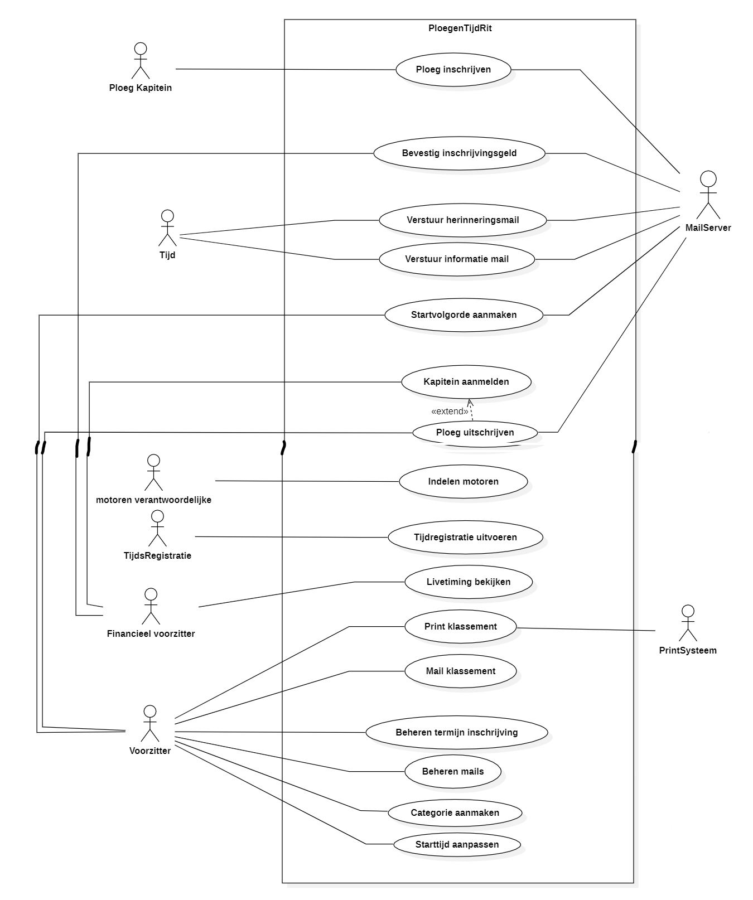
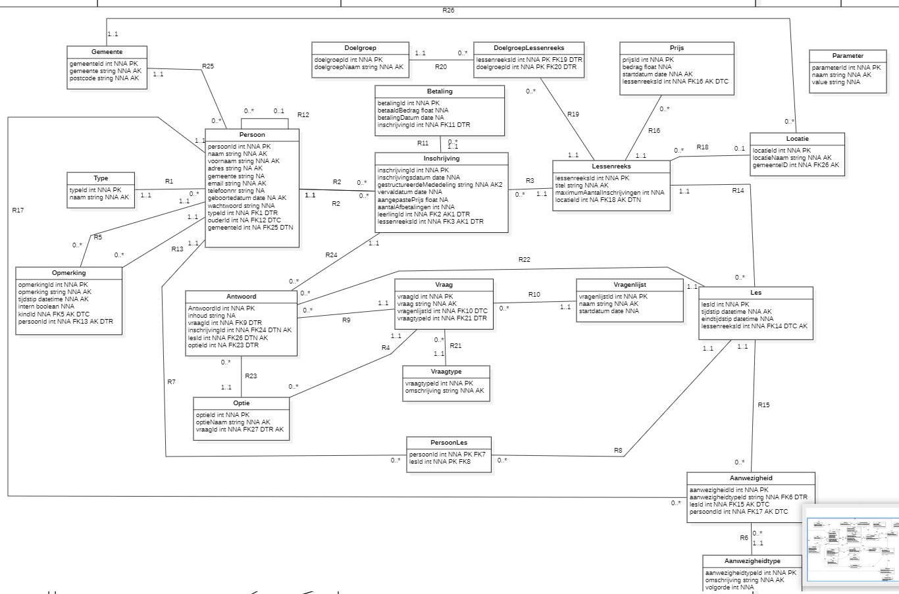

The goal of this project was to talk to a 'customer' that wanted a web application built. Our task was to takes notes of all the functionalities the customer wanted to have in his web application and create a use case diagram for this web app. I was not the only one who worked on this project we were with 6 people in total.
This is the Use Case Diagram we created for this web app.
I worked mostly on the use cases:
This data model was created with a different group and for a different web app.
We did all the work on this data model as a group at the same time, this means we were always all thinking about the same thing at a time. No work was divided creating this model.
This was an individual project I completed in the second semester of the first year. We created a small web application without database, but data could be added while the application was running. But if the pages were refreshed the data would not be saved. This was one of the first projects I honestly really enjoyed. This project is also the reason I chose for Application Development.
It was a small crud application without saving capabilities.